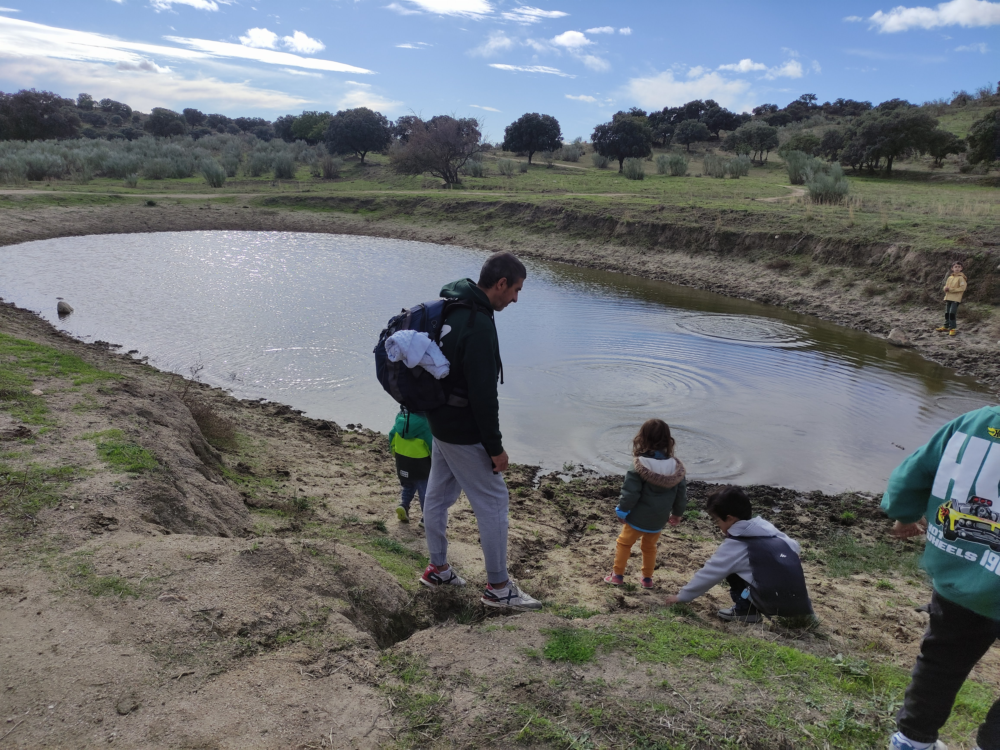
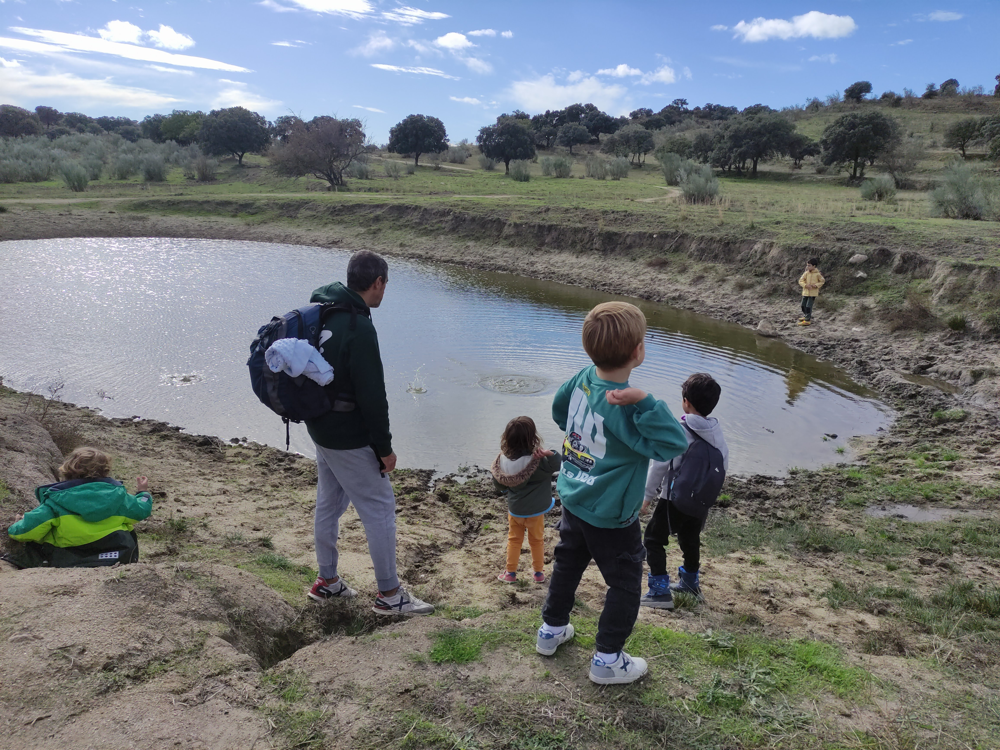
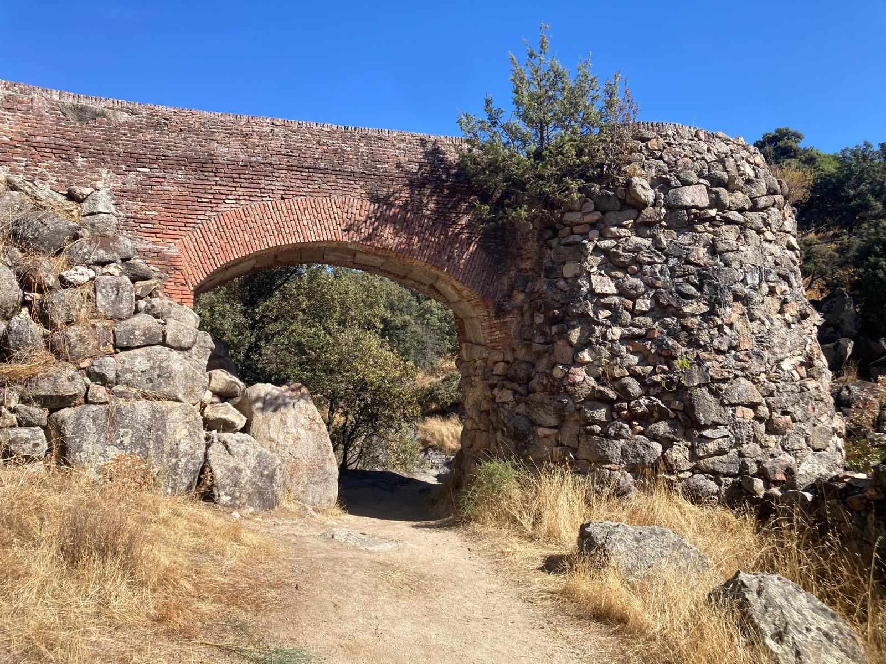
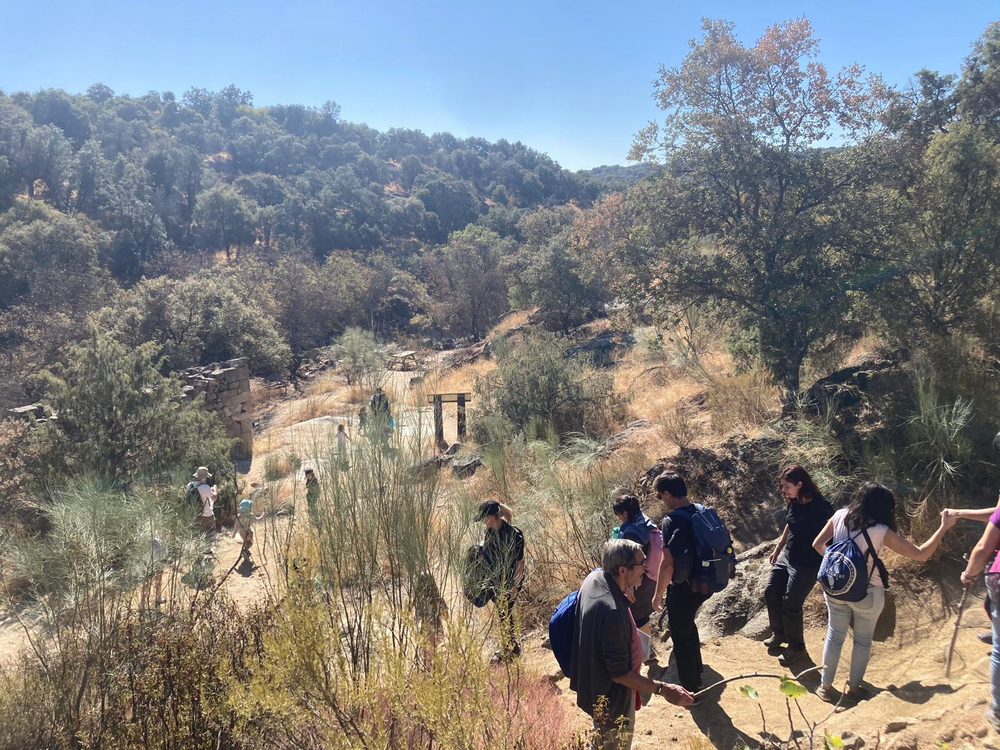
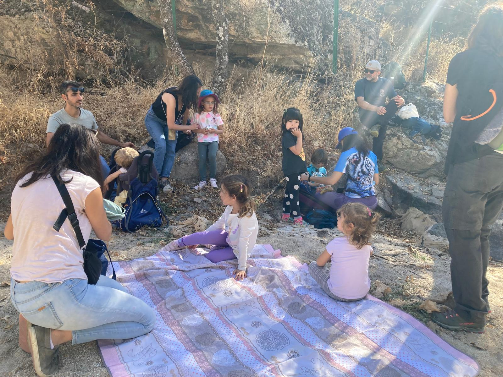
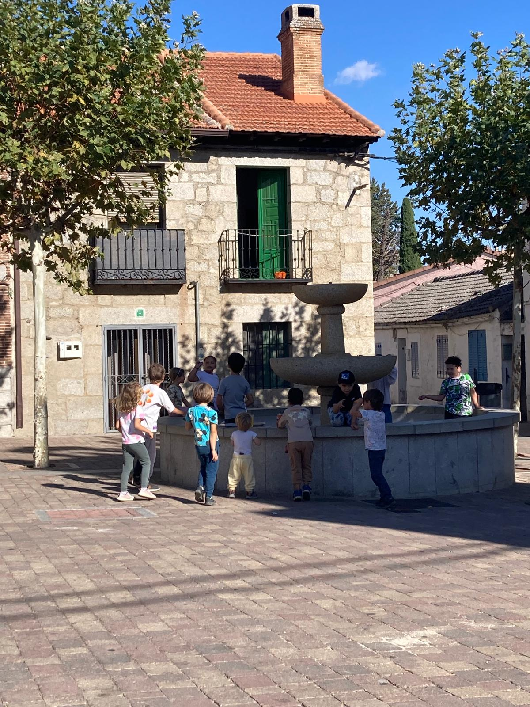
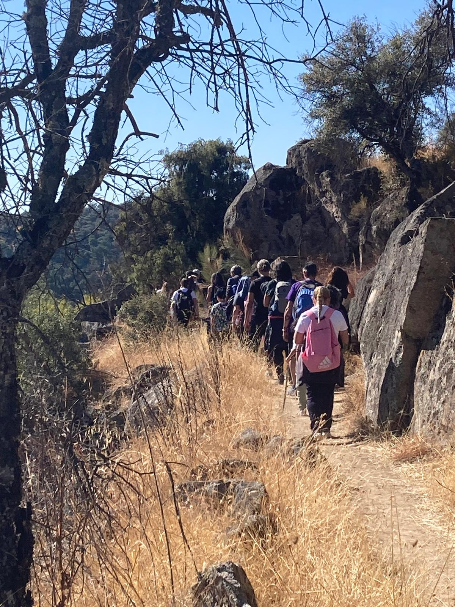

Montaña
Cada trimestre salimos a disfrutar de la naturaleza con una ruta para toda la familia
Cada trimestre organizamos una jornada en la naturaleza para todas las familias del cole. Buscamos rutas circulares de entre 8 y 10 km, con poco desnivel, aptas para todos los niveles y edades.
Comemos juntos en el camino y elegimos lugares accesibles en transporte público, para que ni siquiera haga falta coche. Una forma estupenda de desconectar, hacer comunidad y disfrutar del aire libre.




Rutas anteriores
Descubre los recorridos que ya hemos hecho. Pulsa en cualquiera para ver el mapa de la ruta.
Senda Puricelli
Puerto de Malagón
Desembocadura del Manzanares en el Jarama
Molinos de Navalagamella
Nuestras rutas en imágenes
Momentos de naturaleza, aire libre y comunidad en cada salida







Vídeo de nuestras rutas
Un resumen en imágenes de lo que vivimos en cada salida